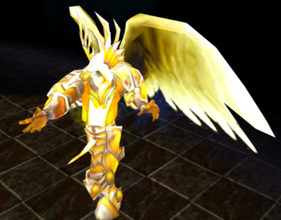

If you are with teammates, dont be the one to lure angels, use your F about the time when he agro second angel, this way you will stun and hit all 3 relatively close.
Use your R as fast as possible, then E, your T is useless for these 3 if you are with team.
If you are alone, use your W when angel gets close to you and lands a hit, there is very big chance he will use Stun Pull, and this way you counter this.
Try to autoattack Angel on Avatar form, he might use up Anti Magic Shield without gaining anything.